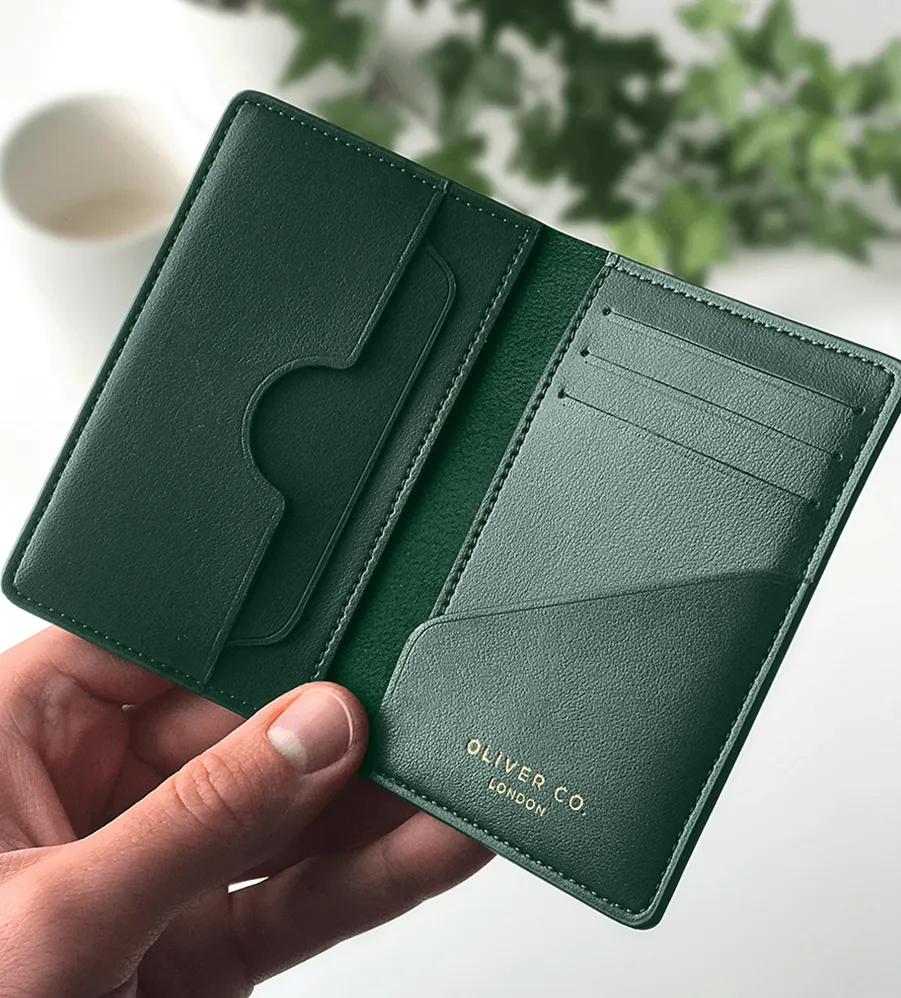
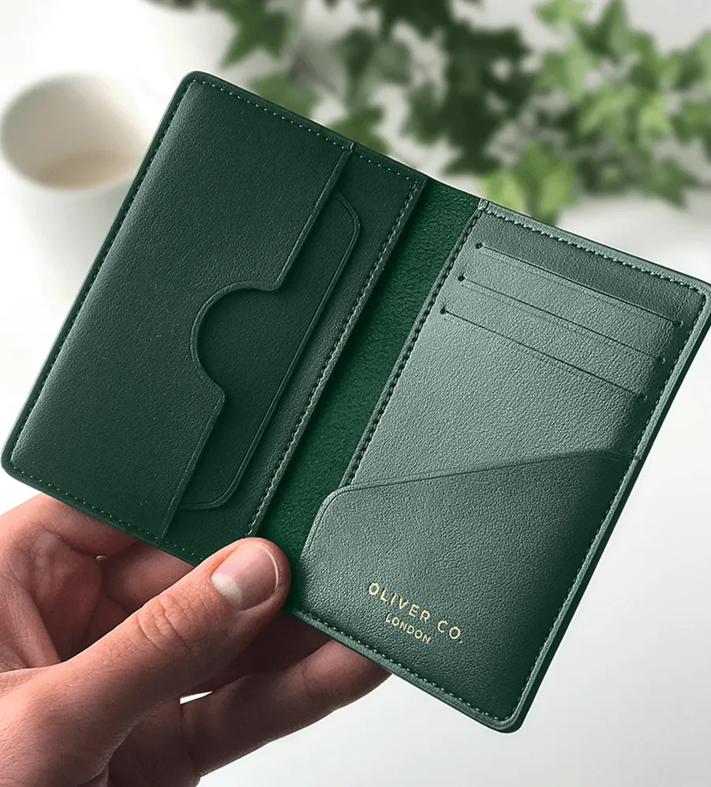

Wallet services, also known as digital wallets or e-wallets, allow users to make payments and transactions without physical cash or cards: Purchases: Users can make purchases in physical stores or online by scanning a QR code or entering transaction data Money transfers: Users can send money to other users or to bank accounts Balance top-ups: Users can add money to their balance through bank transfers, credit or debit card payments, or cash top-ups Cell phone recharges: Users can recharge their cell phone balance through the platform Utility payments: Users can pay for public services like electricity, water, gas, telephone, and cable television Access to loans and credits: Users can access loans and credits for various purposes
 
